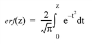

The ERF function returns the value of the error function:

For real input, the error function is computed using rational functions, as described in “Rational Chebyshev approximations for the error function,” W. J. Cody, Math. Comp., 1969, pp. 631-638. For complex input, the error function is computed as Sign ∞ IGAMMA(0.5,Z2), where Sign is taken from the real part of Z.
Result = ERF(Z)
The result is double-precision if the argument is double-precision, otherwise the result is floating-point. The result always has the same structure as Z. The ERF function also accepts complex arguments.
The expression for which the error function is to be evaluated. Z may be complex.
This routine is written to make use of IDL’s thread pool, which can increase execution speed on systems with multiple CPUs. The values stored in the !CPU system variable control whether IDL uses the thread pool for a given computation. In addition, you can use the thread pool keywords TPOOL_MAX_ELTS, TPOOL_MIN_ELTS, and TPOOL_NOTHREAD to override the defaults established by !CPU for a single invocation of this routine. See Thread Pool Keywords
To find the error function of 0.4 and print the result, enter:
PRINT, ERF(0.4D)
IDL prints:
0.42839236
|
Pre 4.0 |
Introduced |
|
5.6 |
Z argument accepts complex input |